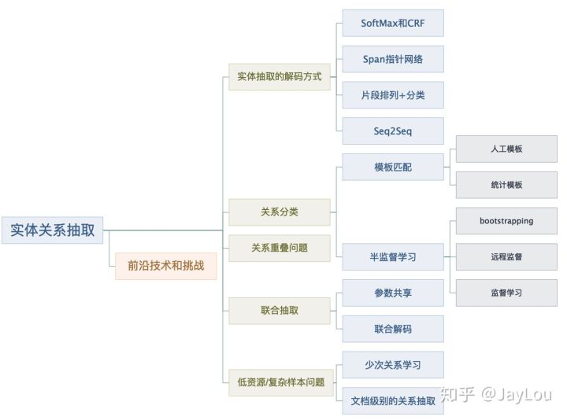
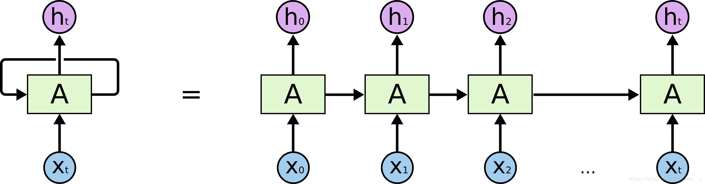
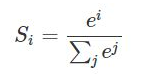
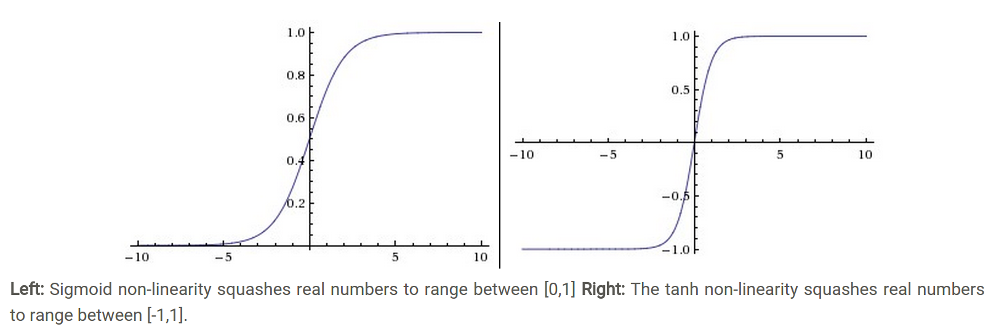
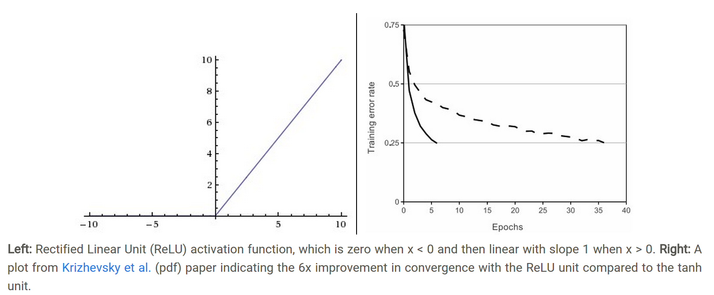
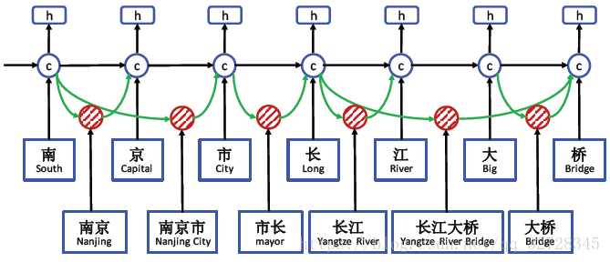
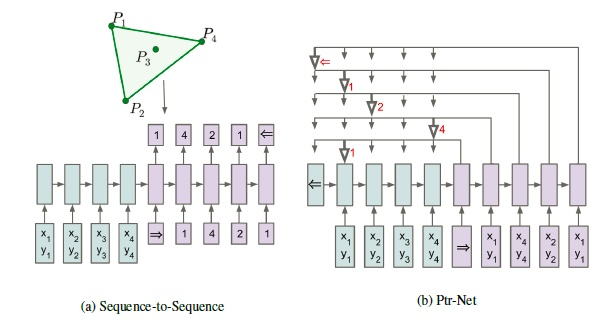
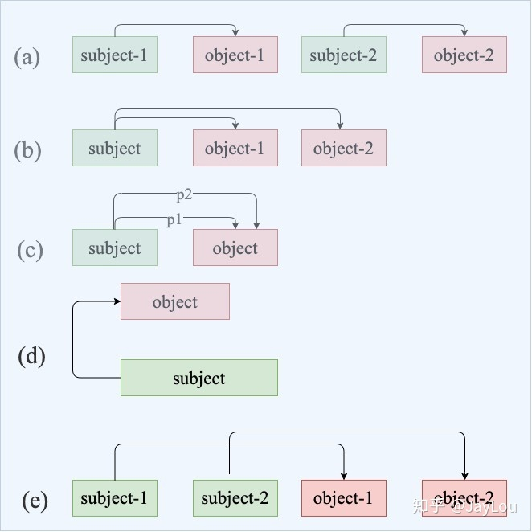
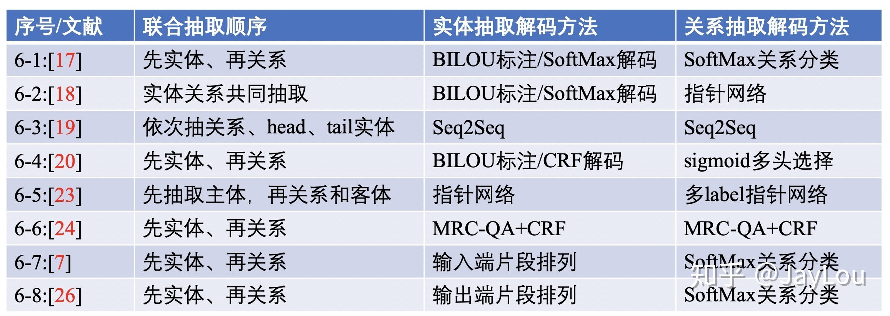
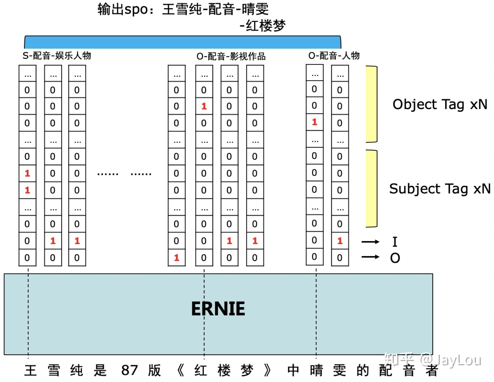

The source comes from: https://zhuanlan.zhihu.com/p/77868938
Catagory
- Q1：与联合抽取对比，Pipeline方法有哪些缺点？
- Q2：NER除了LSTM+CRF，还有哪些解码方式？如何解决嵌套实体问题？
- Q3：Pipeline中的关系分类有哪些常用方法？如何应用弱监督和预训练机制？怎么解决高复杂度问题、进行one-pass关系分类？
- Q4：什么是关系重叠&复杂关系问题？
- Q5：联合抽取难点在哪里？联合抽取总体上有哪些方法？各有哪些缺点？
- Q6：介绍基于共享参数的联合抽取方法？
- Q7：介绍基于联合解码的联合抽取方法？
- Q8：实体关系抽取的前沿技术和挑战有哪些？如何解决低资源和复杂样本下的实体关系抽取？如何应用图神经网络

Q1：与联合抽取对比，Pipeline方法有哪些缺点？
知识点：事件抽取-Pipeline法
化整为零，搞一堆分类器：Trigger Classifier, Argument Classifier…缺点很明显，由于流程过长，各自为政，导致误差积累。
Q2：NER除了LSTM+CRF，还有哪些解码方式？如何解决嵌套实体问题？
关于LSTM
先得提到著名的RNN，“有记忆”的神经网络。可以把 RNNs 看成是一个普通的网络做了多次复制后叠加在一起组成的。每一网络会把它的输出传递到下一个网络中。我们可以把 RNNs 在时间步上进行展开，就得到下图这样：
LSTM是特殊的、更好用的RNN，尤其对于上下文预测间隔较长的情况，LSTM很有用。相比RNN中间为单一的tanh层，LSTM更复杂。
核心思想
- 利用cell传输信息
- 利用门过滤信息：具体通过sigmoid+逐点相乘的方法
- sigmoid相当于bool值，0为否，1为是
- 门结构包括传入门，遗忘门，输出门
- 遗忘门(用来保留信息)，传入门(决定让哪些新信息加入cell)
Softmax函数
用于多分类，将多个神经元映射进（0，1）区间，按概率比较。大概公式就是这样：

其他激活函数

tahn将一个实数输入映射到[-1,1]范围内，如上图（右）所示。当输入为0时，tanh函数输出为0，符合我们对激活函数的要求。然而，tanh函数也存在梯度饱和问题，导致训练效率低下。

相比sigmoid和tanh函数，Relu激活函数的优点在于：
梯度不饱和。梯度计算公式为：。因此在反向传播过程中，减轻了梯度弥散的问题，神经网络前几层的参数也可以很快的更新。
计算速度快。正向传播过程中，sigmoid和tanh函数计算激活值时需要计算指数，而Relu函数仅需要设置阈值。
因此，Relu激活函数可以极大地加快收敛速度，相比tanh函数，收敛速度可以加快6倍（如上图（右）所示）。
实体重叠问题
文章用《叶圣陶散文选集》说明该问题，作者和作品两个实体混淆。解决办法：实体抽取解码
办法1：序列标注（Softmax + CRF）
本质是token-level的多分类问题，token指的是字符级别的概念；相比segment-level，范围更大，说的就是词切分，也就是分词
CRF：给序列中的每一个token进行分类，好处是加入了上下文的联系。
对于分词边界错误的改进方法-LatticeLSTM+CRF

如图所示，先将每个字符切分开，再用红色的cell表示中文词汇，形成网格结构。
词汇边界通常为实体边界，根据大量语料构建词典，若当前字符与之前字符构成词汇，则从这些词汇中提取信息，联合更新记忆状态。
jieba的全切分模式和搜索引擎模式，可以将所有组合列出；若遇到以相同词结尾的词汇时，会根据预先准备的字、词典，训练字词级别的向量。
办法1的缺陷及改进
序列标注采取BILOU（Begin, Inside, Last, Outside, Unit)）标注框架，每一个token只能属于一种，不能解决重叠实体问题。
改进1：Softmax——>Sigmoid（0/1表达）
改进2：增加标签，合并
两种方式本质上都是给实体增加说明信息，不同的是一个是用数字结构，一个是用标签信息。
办法2：指针网络（PointerNet）
先说seq2seq，常用在MT中做序列对齐。其中，加入Attention机制后，由于对encoder的隐含状态加权拼接至decoder，实现软对齐，效果提升。
PointerNet是Attention机制的简化，用于解决类似寻找凸包问题。对于凸包问题的示例，如下：

传统seq2seq模型解决方式是输入四个点的坐标，比如input list = [start, 1, 2, 3, 4, end]，则output list = [start, 1, 4, 2, 1, end]
一旦list长度改变，则无法预测大于4的数字，而PointerNet可以。因为添加了指针，所以output list跟随input list变动而变动。而为什么说PointerNet是Attention机制的衍生，是因为Attention作用在encoder的weight变成了pointer，如想对某个元素增加weight，则直接point该元素即可。
换句话说，传统带有注意力机制的seq2seq模型输出的是针对输出词汇表的一个概率分布，而Pointer Networks输出的则是针对输入文本序列的概率分布。
PointerNet在NER中
- MRC-QA + Single-Layer-PointerNet
这种方式目的在于将原文本构建成完成的query，在补充的后续query部分加入先验语义知识。根据不同的语义，使用一层PointerNet指明头尾指针。 - Multiple-Layer-PointerNet
这种方式弥补了单层只能抽取单类型实体的不足，添加了多层label。
简单来说，PointerNet仍具有收敛速度慢、计算量大的缺点。
办法3：片段排列+分类
扩大了从token-level抽取的概念，将重点放在span-level。这种方式将含T个token的文本按固定顺序一一列出，如叶，叶圣，叶圣陶…缺点是对于长文本，一是无意义的样本较多，需削减；二是计算量大。
Q3：Pipeline中的关系分类有哪些常用方法？如何应用弱监督和预训练机制？怎么解决高复杂度问题、进行one-pass关系分类？
- 模板匹配：一是人工判断上下位关系；二是统计模板，利用search engine如维基百科里的知识图谱，保留置信度高的
- 半监督学习：
（1）自举（bootstrapping），利用少量种子集合举一反三。优点是构建成本低，缺点是造成语义漂移。对于语义漂移的解释如下，参考
众所周知的是bootstrapping通常会获取与种子无关的实例。例如对于任务“从网络语料库中收集常见景点名称”。给定词语“Geneva”(日内瓦)和“Bali”(巴黎)作为种子实例，bootstrapping最终将学习成通用模式如“pictures”和“photos”，这些与其他不相关实例同时出现。随后的迭代可能会获得与这些通用模式共同出现的频繁词语，如“Britney Spears”，这种现象被称为语义漂移。
（2）远程监督，假定某实体对满足某个关系，则包含该实体对的所有句子（称为Bag）都可能满足该关系。但实际情况远非如此，所以有如下改进：
- 多示例学习：对包含实体对的句子进行分类，如PCNNs模型。针对远程监督中的wrong label problem，采用多示例学习的方式从训练集中抽取置信度较高的训练样例模型，一般构建过程包括word embeddings——>convolution——>pooling——>Softmax multi-label output——>multi-example learning。后续加入Attention机制，出现了APCNNs模型。相比PCNNs，在pooling层后，softmax之前加入基于句子级别的attention机制（能够根据特定关系为实体对的每个句子分配权重，通过不断学习使得有效句子获得高权重，有噪音的句子获得低权重。参考
- 强化学习：优化Bag掺杂大量噪声的情况，包括样例选择器和关系分类器。前者负责从样例中筛选高质量句子，后者向前者做出反馈，提供更优的选择策略。
- 预训练机制：无需任何知识库和人工标注，将实体作为“blank”标识符进行填充；包含同样实体对的句子为正样本，反之为负样本
（3）监督学习，主要分为基于特征（定义特征集合）、核函数（无需定义特征集合，核函数只是用来计算映射到高维空间之后的内积）和深度学习（主要贡献在于对Bag只需one-pass输入即可进行多个关系分类）。
Q4：什么是关系重叠&复杂关系问题？

- a：正常关系问题
- b：关系重叠问题，一对多。如“张学友演唱过《吻别》《在你身边》”中，存在2种关系：「张学友-歌手-吻别」和「张学友-歌手-在你身边」
- c：关系重新问题，一对实体存在多种关系。如“周杰伦作曲并演唱《七里香》”中，存在2种关系：「周杰伦-歌手-七里香」和「周杰伦-作曲-七里香」
- d：复杂关系问题，由实体重叠导致。如《叶圣陶散文选集》中，叶圣陶-作品-叶圣陶散文选集；
- e：复杂关系问题，关系交叉导致。如“张学友、周杰伦分别演唱过《吻别》《七里香》”，「张学友-歌手-吻别」和「周杰伦-歌手-七里香」
Q5：联合抽取难点在哪里？联合抽取总体上有哪些方法？各有哪些缺点？
联合抽取模型分类：
- 共享参数（通过共享参数（共享输入特征或者内部隐层状态）实现联合，此种方法对子模型没有限制，但是由于使用独立的解码算法，导致实体模型和关系模型之间交互不强。）
- 联合解码（需要对子模型特征的丰富性以及联合解码的精确性之间做权衡）
需要做的：需要一个方法可以同时考虑一个句子中所有实体、实体与关系、关系与关系之间的交互。
Q6：介绍基于共享参数的联合抽取方法？

在联合抽取中的实体和关系抽取的解码方式与Q2中的实体抽取的解码方式基本一致，主要包括：序列标注CRF/SoftMax、指针网络、分类SoftMax、Seq2Seq等。基于共享参数的联合抽取，实体抽取loss会与关系抽取loss相加。
Q7：介绍基于联合解码的联合抽取方法？
简单了解三种统一实体和关系的标注框架：
- 用关系标签进行BIOES标注，head实体序号为1，tail实体序号为2。但该框架只能对实体在某个关系中进行表示，而对多关系无用
- 对n个token的句子有n个标注框架，采用BIES标注，用CRF解码。该框架复杂度自然很高了。
- 百度PaddlePaddle的SPO标注框架，这个挺有意思。
 - 使用方法的是token level 的多label分类，即每一个token对应多个label。
- 标注框架十分巧妙，如上图示例中形成的2个spo三元组，「王雪纯-配音-晴雯」和「王雪纯-配音-红楼梦」，存在两个关系「配音-人物」和「配音-作品」，多label标签就以关系标签建立。
- 问题还在于对实体重叠关系抽取、多重同类关系无用，需引入后处理逻辑。
Q8：实体关系抽取的前沿技术和挑战有哪些？如何解决低资源和复杂样本下的实体关系抽取？如何应用图神经网络
- pipeline中的NER
实体重叠问题 ——> 词典+规则 - 关系分类问题
降低计算复杂度，拒绝重复编码句子，而是one-pass。在低资源场景下，采取远程监督的方法确实可以自动进行语料构建，但其中针对样本噪音的降噪方法是否还有提升空间？降噪方法能否做到与模型无关，是否可以借鉴图像分类中很有效的置信学习呢? - 联合抽取
难点是如何加强实体模型和关系模型之间的交互，怎么对需要对子模型特征的丰富性以及联合解码的精确性之间做权衡？ - 低资源和复杂样本问题
对于少次关系学习问题：他们提出了FewRel 2.0，在原版数据集FewRel的基础上增加了以下两大挑战：领域迁移（domain adaptation）和“以上都不是”检测（none-of-the-above detection）。
对于文档级别的关系抽取问题：提出了DocRED数据集[42]，是一个大规模的人工标注的文档级关系抽取数据集，文档级关系抽取任务要求模型具有强大的模式识别、逻辑推理、指代推理和常识推理能力。
参考文献
以下列举原文档的参考，以供日后慢慢研读。
Hierarchically-Refined Label Attention Network for Sequence Labeling https://arxiv.org/pdf/1908.08676.pdf
Chinese NER Using Lattice LSTM https://arxiv.org/pdf/1805.02023.pdf
abNeural Architectures for Nested NER through Linearization
Nested named entity recognition revisited.
abA Unified MRC Framework for Named Entity Recognition https://arxiv.org/pdf/1910.11476.pdf
https://zhuanlan.zhihu.com/p/89019478
abcdSpan-Level Model for Relation Extraction https://www.aclweb.org/anthology/P19-1525.pdf
abDistant Supervision for Relation Extraction via Piecewise Convolutional Neural Networks. EMNLP
Selective Attention over Instances (Lin 2016)
Relation Extraction with Multi-instance Multi-label Convolutional Neural Networks.
Distant Supervision for Relation Extraction with Sentence-Level Attention and Entity Descriptions
Reinforcement Learning for Relation Classification from Noisy Data
abcMatching the Blanks: Distributional Similarity for Relation Learning https://arxiv.org/pdf/1906.03158.pdf
abExtracting Multiple-Relations in One-Pass with Pre-Trained Transformers
abcdSimultaneously Self-Attending to All Mentions for Full-Abstract Biological Relation Extraction https://www.aclweb.org/anthology/N18-1080.pdf
abc基于深度学习的联合实体关系抽取 http://www.czsun.site/publications/thesis.pdf
End-to-End Relation Extraction using LSTMs on Sequences and Tree Structures https://www.aclweb.org/anthology/P16-1105.pdf
Going out on a limb: Joint Extraction of Entity Mentions and Relations without Dependency Trees https://pdfs.semanticscholar.org/bbbd/45338fbd85b0bacf23918bb77107f4cfb69e.pdf?_ga=2.119149259.311990779.1584453795-1756505226.1584453795
Extracting Relational Facts by an End-to-End Neural Model with Copy Mechanism
abJoint entity recognition and relation extraction as a multi-head selection problem
BERT-Based Multi-Head Selection for Joint Entity-Relation Extraction
Adversarial training for multi-context joint entity and relation extraction
abJoint Extraction of Entities and Relations Based on a Novel Decomposition Strategy
Entity-Relation Extraction as Multi-Turn Question Answering https://link.zhihu.com/?target=https%3A//arxiv.org/pdf/1905.05529.pdf
abcdhttps://zhuanlan.zhihu.com/p/65870466
Span-based Joint Entity and Relation Extraction with Transformer Pre-training https://arxiv.org/pdf/1909.07755.pdf
Joint inference for fine-grained opinion extraction
Investigating lstms for joint extraction of opinion entitiesandrelations.
Incremental joint extraction of entity mentions and relations.
End-to-end neural relation extrac- tion with global optimization.
Jointextractionofentities and relations based on a novel graph scheme
Joint extraction of entities and relations based on a novel tagging scheme. https://arxiv.org/pdf/1706.05075.pdf
Joint Extraction of Entities and Overlapping Relations Using Position-Attentive Sequence Labeling
abhttps://github.com/PaddlePaddle/Research/tree/master/KG/DuIE_Baseline
Confident Learning: Estimating Uncertainty in Dataset Labels
Graph Neural Networks with Generated Parameters for Relation
GraphRel: Modeling Text as Relational Graphs for Joint Entity and Relation Extraction
Attention Guided Graph Convolutional Networks for Relation Extraction
Joint Type Inference on Entities and Relations via Graph Convolutional Networks
abhttps://www.zhihu.com/search?type=content&q=%E5%85%B3%E7%B3%BB%E6%8A%BD%E5%8F%96
FewRel 2.0: Towards More Challenging Few-Shot Relation Classification
DocRED: A Large-Scale Document-Level Relation Extraction Dataset
Knowledge-Augmented Language Model and its Application to Unsupervised Named-Entity Recognition
Description-Based Zero-shot Fine-Grained Entity Typing
Zero-Shot Entity Linking by Reading Entity Descriptions
Multi-Level Matching and Aggregation Network for Few-Shot Relation Classification
Exploiting Entity BIO Tag Embeddings and Multi-task Learning for Relation Extraction with Imbalanced Data
Massively Multilingual Transfer for NER